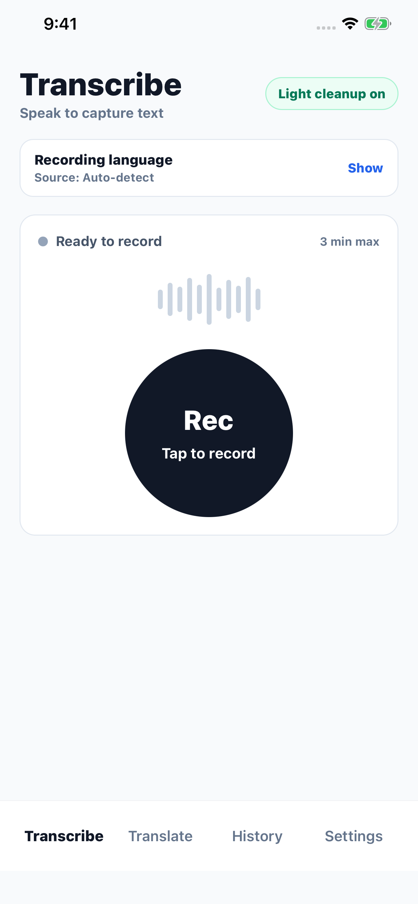
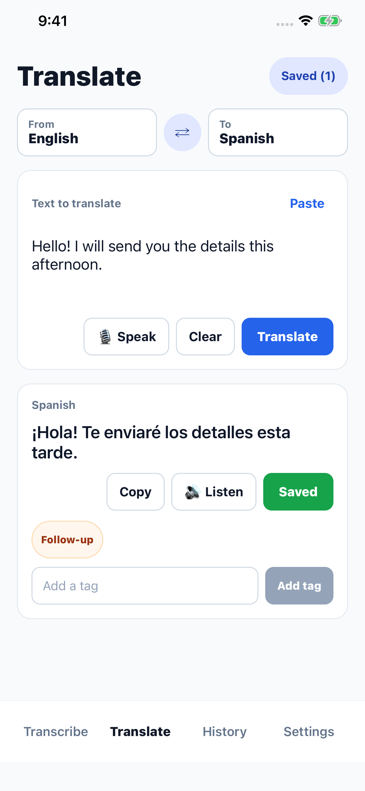
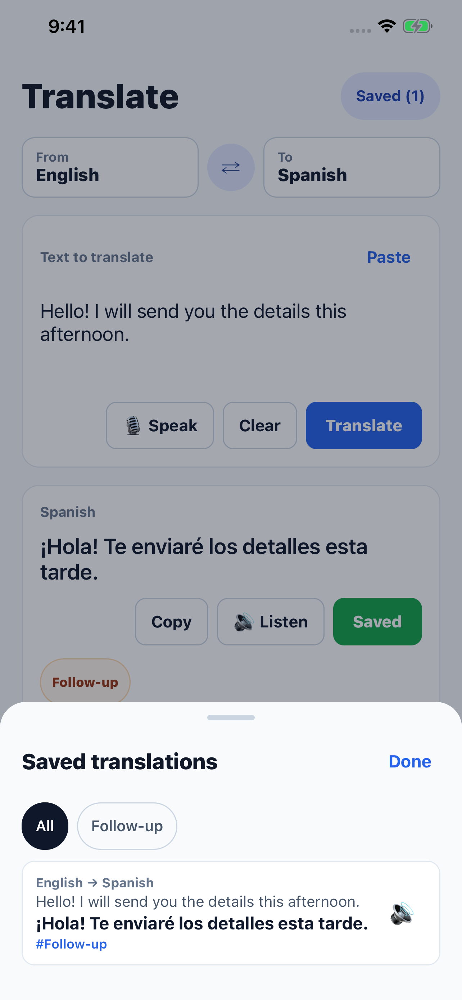
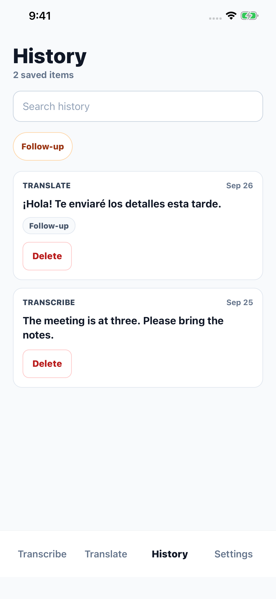
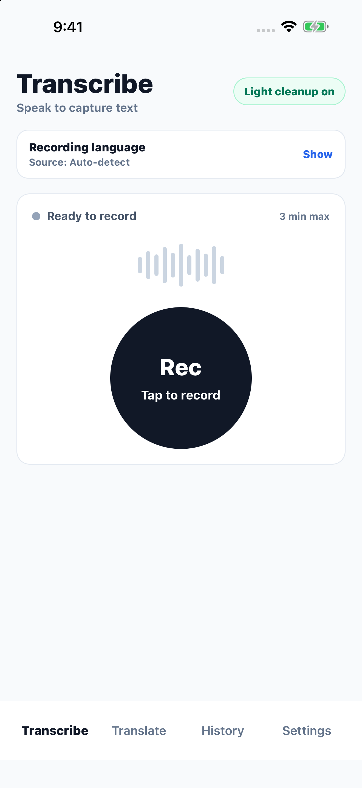
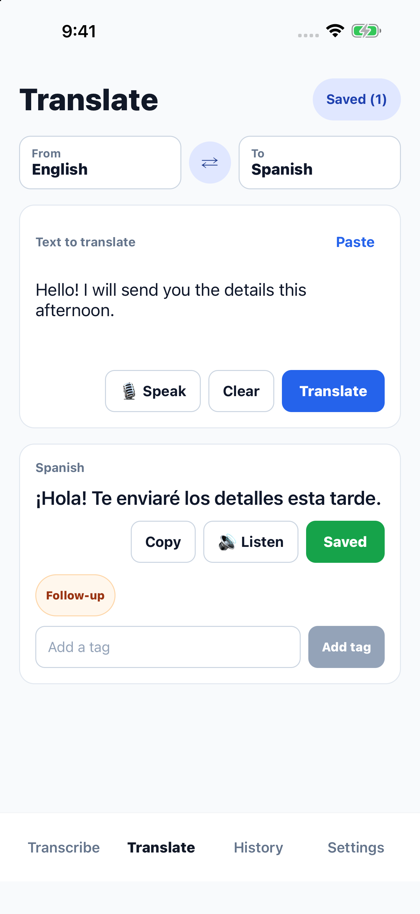
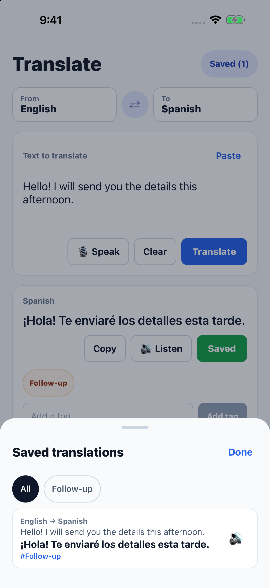
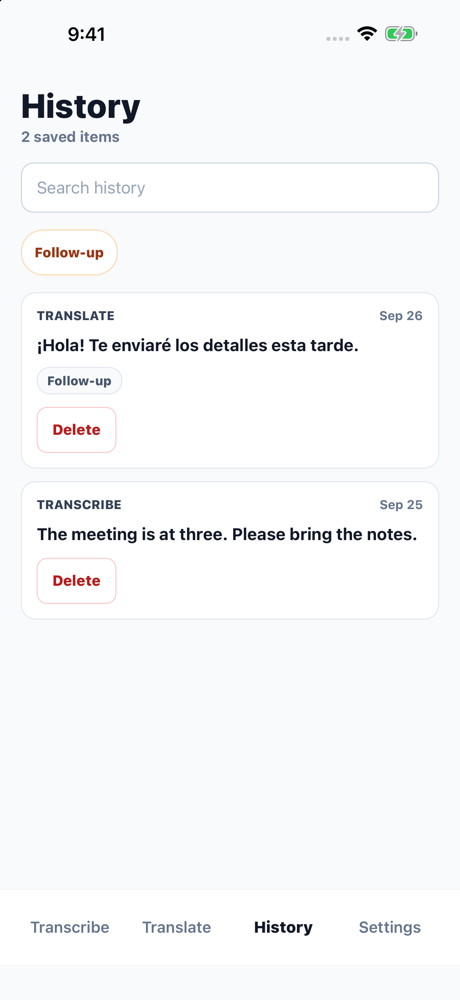

This candidate moves saved translations into a bottom sheet, adds Paste to the Translate input, and renames the Record tab to Transcribe. Captures are from clean iOS 26.5 simulators with synthetic examples. The App Store draft still contains the earlier screenshots; these images are for review before replacement and submission.







